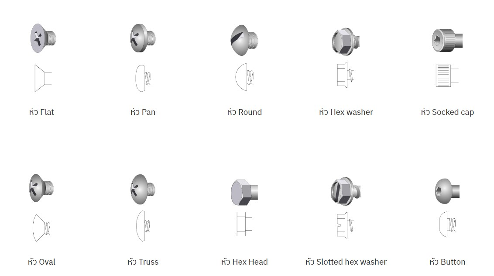

สกรู เป็นสลักภัณฑ์ขั้นพื้นฐานที่ใช้สำหรับยึดส่วนต่างๆ เข้าด้วยกันอย่างแน่นหนา
เพื่อการประกอบชิ้นส่วนและการติดตั้งผลิตภัณฑ์จนถึงโครงสร้างอาคาร เราสามารถพบเห็นได้ในชีวิตประจำวัน เช่น การประกอบเครื่องจักร ชิ้นส่วนยานยนต์ เครื่องใช้ไฟฟ้า เฟอร์นิเจอร์ไม้ เป็นต้น
โดยทั่วไปแล้วสกรูและโบลท์จะมีลักษณะแท่งโลหะเกลียวและมีหัวพร้อมร่องสำหรับขันด้วยไขควง ซึ่งสามารถใช้ยึดได้ทั้งแบบถาวรและแบบชั่วคราว นอกจากนี้สกรูและโบลท์ยังมีรูปทรง ขนาด ประเภทเกลียว
รวมถึงวัสดุที่ใช้ผลิตมีให้เลือกตั้งแต่วัสดุเหล็กกล้า สแตนเลส ที่มีความแข็งแรงทนทาน ไม่เป็นสนิม เพื่อตอบโจทย์ได้ทุกการใช้งานอีกด้วย
สกรู เป็นสลักภัณฑ์ขั้นพื้นฐานที่ใช้สำหรับยึดส่วนต่างๆ เข้าด้วยกันอย่างแน่นหนา
เพื่อการประกอบชิ้นส่วนและการติดตั้งผลิตภัณฑ์จนถึงโครงสร้างอาคาร เราสามารถพบเห็นได้ในชีวิตประจำวัน เช่น การประกอบเครื่องจักร ชิ้นส่วนยานยนต์ เครื่องใช้ไฟฟ้า เฟอร์นิเจอร์ไม้ เป็นต้น
โดยทั่วไปแล้วสกรูและโบลท์จะมีลักษณะแท่งโลหะเกลียวและมีหัวพร้อมร่องสำหรับขันด้วยไขควง ซึ่งสามารถใช้ยึดได้ทั้งแบบถาวรและแบบชั่วคราว นอกจากนี้สกรูและโบลท์ยังมีรูปทรง ขนาด ประเภทเกลียว
รวมถึงวัสดุที่ใช้ผลิตมีให้เลือกตั้งแต่วัสดุเหล็กกล้า สแตนเลส ที่มีความแข็งแรงทนทาน ไม่เป็นสนิม เพื่อตอบโจทย์ได้ทุกการใช้งานอีกด้วย
ประเภทของสกรู
ประเภทของหัวสกรู
หลักการเลือกใช้สกรู
ประเภทของสกรู
สกรูสกรูโดยทั่วไปสกรูที่ใช้งานกันสามารถแบ่งออกหลักๆ ได้ 6 ประเภท
1.สกรูหัวจม (Hex Socket Head Cap Screws) โดยตำแหน่งหัวสกรูมีลักษณะเป็นทรงกระบอกมีทั้งแบบสูงและต่ำ ด้านในหัวสกรูเป็นรูหกเหลี่ยมสามารถให้แรงจับยึดสูง ส่วนสกรูหัวจมเทเปอร์มีลักษณะหัวเรียบแบนและเรียว ด้านในเป็นรูหกเหลี่ยมเช่นกัน ผลิตจากวัสดุโลหะและพลาสติกวิศวกรรม สกรูหัวจมขันยึดด้วยการใช้ประแจหกเหลี่ยมเข้ากับวัตถุได้อย่างแน่นหนา นิยมใช้งานกับชิ้นส่วนยานยนต์ เครื่องจักร เครื่องใช้ไฟฟ้า ฯลฯ
2.สกรูเกลียวปล่อย หรือสกรูเกลียวไม้ (Wood Screw) เป็นสกรูที่มีลักษณะเกลียวยาวและปลายแหลม สามารถใช้ขันเข้าไม้หรือพลาสติกได้โดยตรง ไม่จำเป็นต้องใช้น็อตตัวเมียในการยึดอีกฝั่ง มีหลายแบบขึ้นกับชนิดของหัวสกรู
3.สกรูเครื่องจักร (Machine Screw) สกรูเครื่อง หรือสกรูเกลียวละเอียด เป็นสกรูที่ออกแบบเกลียวที่ละเอียดมีความเที่ยงตรงสูงซึ่งสามารถขันยึดได้แน่นหนา และในระยะยาวมีการคลายตัวได้น้อยกว่าสกรูประเภทอื่น สกรูชนิดนี้ใช้ในงานยึดชิ้นส่วนเครื่องจักรและใช้ในระบบงานอุตสาหกรรมหลายประเภท
4.สกรูปลายสว่าน (Self Drilling Screw) เป็นสกรูที่มีปลายคล้ายดอกสว่าน สามารถขันยึดที่เนื้อชิ้นงานได้โดยไม่ต้องเจาะนำ สกรูชนิดนี้มีรูปแบบหัวสกรูหลากหลายแบบขึ้นกับการใช้งานสกรูตัวหนอน (Set Screw) เป็นเกลียวตลอดทั้งแท่ง ส่วนบนไม่มีหัวสกรูเหมือนกับสกรูชนิดอื่น แต่มีลักษณะเป็นรูหกเหลี่ยมซึ่งขันยึดเข้ากับชิ้นงานได้โดยใช้ประแจหกเหลี่ยมหรือไขควงหกเหลี่ยม สกรูชนิดนี้มีปลายหลากหลายรูปแบบ ได้แก่ ปลายแบน ปลายทรงกระบอก ปลายแหลม ปลายถ้วย และปลายโค้งมน เหมาะสำหรับใช้ยึดในงานประกอบเครื่องจักร รถยนต์ งานแม่พิมพ์ ฯลฯ
5.สกรูพร้อมแหวนรอง (Screws with Captured Washer) ด้านล่างหัวสกรูมาพร้อมแหวนรองที่ทำจากโลหะซึ่งมีทั้งแหวนแบนธรรมดาและแหวนสปริง สกรูชนิดนี้มีคุณสมบัติในการช่วยกระจายน้ำหนักของแรงกระแทกกับเนื้อวัตถุ เพื่อป้องกันช่องรูเกิดความเสียหายและพื้นผิววัตถุไม่ให้เกิดรอยได้ และช่วยเพิ่มแรงในการยึดได้แน่นหนายิ่งขึ้น ทั้งนี้หัวสกรูยังมีให้เลือกหลายหลายแบบอีกด้วย เช่น หัวแฉก หัวผ่า หัวกลม เป็นต้น
6.สกรูตัวหนอน (Set Screw) เป็นเกลียวตลอดทั้งแท่ง ส่วนบนไม่มีหัวสกรูเหมือนกับสกรูชนิดอื่น แต่มีลักษณะเป็นรูหกเหลี่ยมซึ่งขันยึดเข้ากับชิ้นงานได้โดยใช้ประแจหกเหลี่ยมหรือไขควงหกเหลี่ยม สกรูชนิดนี้มีปลายหลากหลายรูปแบบ ได้แก่ ปลายแบน ปลายทรงกระบอก ปลายแหลม ปลายถ้วย และปลายโค้งมน เหมาะสำหรับใช้ยึดในงานประกอบเครื่องจักร รถยนต์ งานแม่พิมพ์ ฯลฯ
Back to top
ประเภทของหัวสกรู

Back to top
หลักการเลือกใช้สกรู
ในการเลือกใช้สกรูนั้นต้องเลือกให้ตรงตามลักษณะของงาน ซึ่งสามารถเลือกได้จากขนาดความยาว และชนิดของเกลียวโดยหลักการทำงานของมันจะอาศัยแรงหมุนให้เกลียวเจาะทะลุเข้าไปในชิ้นงาน
เพื่อยึดติดหรือเหนี่ยวรั้งวัตถุทั้งสองชิ้นเข้าไว้ด้วยกัน ทั้งนี้ ถ้าพบวัสดุเกิดการชำรุด หัก บิ่น หรือ งอ ไม่ควรนำมาใช้ เพื่อความปลอดภัยของผู้บริโภคและงาน
Back to top
แหล่งที่มา : https://misumitechnical.com/technical/selection-guide/type-of-screws-bolts/#
แหล่งที่มา : https://www.yellowpages.co.th/article/screw?fbclid=IwAR2esX1JuZr7DIzuawIFVh9isfCLwELS6EvZ9e38f4E0Wbq9SQmywAsOU7g